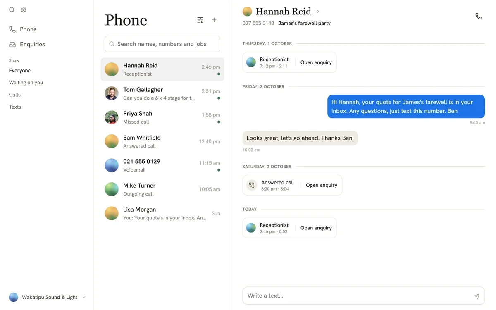
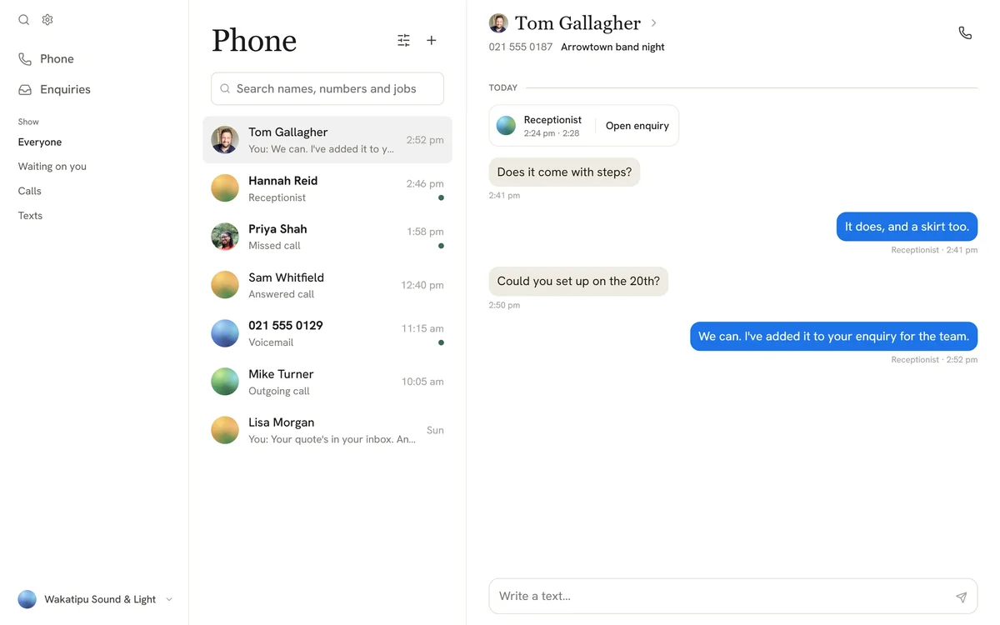
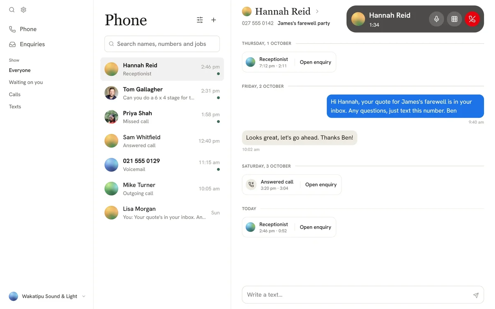
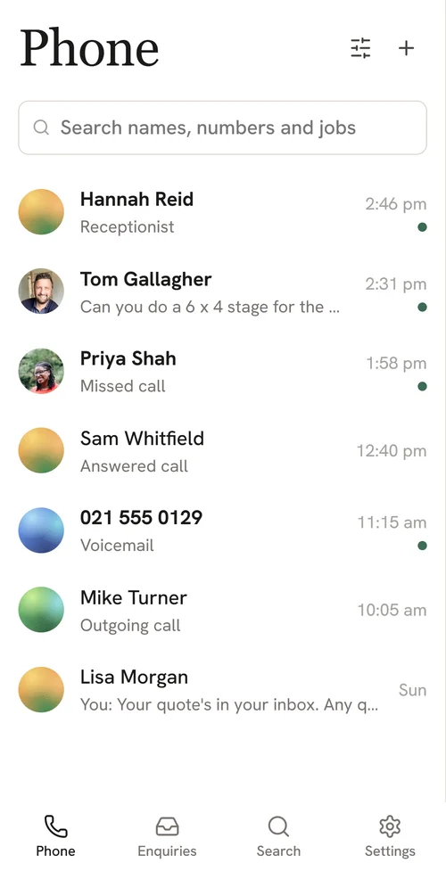
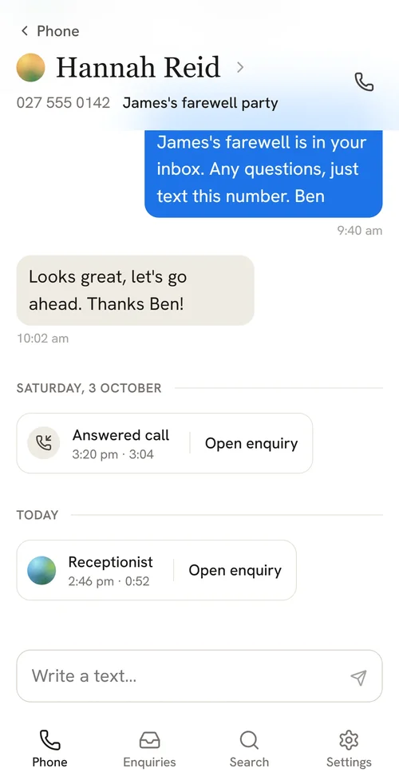

Kahu Hutton
HireOS
July 2026 to present. hireos.co.nz.
Every hire enquiry, in one place. One number for the whole team, every call and text in one app, synced to their rental system. Built and sold solo. Live at Accent Productions, The Rock Factory, Triac Light & Sound, Marquee Hire City, and NES Hire, with AV Media, Crown Events and 5+ more in the pipeline.

Calls, texts and voicemails in one list, each under the customer.

When the team is busy, the receptionist answers the call or text.

On a call, with the customer's history beside it.


The mobile app on iOS and Android.
The important bits
- Sales: 24 discovery interviews (17 named the same pain, enquiries arrive under-specified), then 125 cold calls. Five live, 5+ more pilots in the works.
- Intake: an AI receptionist answers over SIP, writes up each call and text, and drafts the job in Current RMS or Rentman. Changes wait for a person to accept.
- RMS: for companies with no rental system. Quoting, approval, payment, and crewing, with gear booked under advisory locks so two jobs can't take the same kit. Numbers land in Xero.
- Mobile: iOS and Android apps with calling written natively. PJSIP over TLS to Asterisk, CallKit and ConnectionService, push for incoming calls and texts.
- Go and Postgres on Cloud Run, React on Bun, Terraform, CI against a real Postgres, green on main deploys itself.
- Since 9 July 2026: about 265,000 lines of code, 1,133 commits, 627 pull requests, 169 issues. Code is private :)
Back